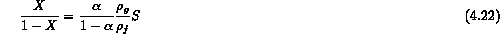
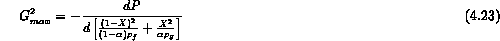
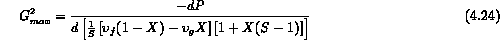
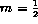
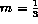

One of the key assumptions utilized in the past two models was that the velocity of each phase was equal. This assumption is known to be in error particularly under conditions where the pressure is low and the density ratio can be large. The concept of separated flow which was introduced for pressure drop can also be used here to develop a critical flow model. Let us consider the case where the phases are in thermodynamic equilibrium although there is slip between the phases. As stated previously, phase equilibrium is a good assumption when the phases are initially well-mixed or dispersed, or when the channel is long to allow equilibrium to develop.
Once again under isentropic flow conditions we can express the pressure drop as consisting of only acceleration effects (i.e. equ 4.9). In this case one must remember the relationship between density and specific volume contains the velocity ratio

where S is the ratio of . The expression for acceleration pressure drop (equ. 4.9) is in general

If we eliminate the void fraction,  , from this expression using equ. 4.22 we arrive at the general expression for the critical mass velocity
, from this expression using equ. 4.22 we arrive at the general expression for the critical mass velocity

One should note that for equal phase velocities, (S = 1) we simplify to the HEM expression. The flow quality at this "choking" condition can be found from the energy balance and equ. 4.22 as

Now if one can specify the critical slip ratio at the "choking" condition then one can use equ's 24 and 25 to find X and (2 equs and 2 unknowns).
Based on some theoretical arguments and empirical matching of experimental data there are two widely utilized models [8-10] for the critical velocity slip ratio, . Both models assume that the slip ratio at "choking" conditions is equal to the inverse density ratio to an exponent, m
where Fauske [8,9] assumes  and Moody uses  . The only real justification for either exponent is comparison to data and matching of the exponent and the critical pressure ratio. Over a wide range of data Fauske's empirical value shows somewhat better agreement. In addition the Fauske model has been solved parametrically and a convenient graphical solution is available (Figure 4.6 and 4.7) with the effect of geometry also empirically included. Therefore, we discuss this model results below, primarily as an example of this class of semi-empirical models.
Fauske Model
One interesting note should be made. Because in Fauske's model the exponent is empirically "fit" to data the isentropic flow assumption becomes somewhat of a moot point. One might consider that frictional effects, if important are indirectly accounted for in the empirical part of the model. However, this is only correct for similar L/D ratios. If one uses the model outside of its range of data then additional frictional effects may have to be included. As one will see in the graphical results this would be in the range of pipe length to diameter ratio of 15 or greater. Let us discuss the model results in general and then examine the effect of geometry.
Figure 4.6 is a plot of the choked mass velocity as a function of stagnation enthalpy at various critical pressures for steam-water mixtures. For any enthalpy and choked pressure one can immediately locate the choked mass velocity.
In order to calculate the critical pressure at the choked plane, it is necessary to refer to Figure 4.6 Here the choked pressure ratio is shown as a function of the L/D of the test section [9]. The choked flow is calculated using several different equations depending on the length to diameter ratio of the outlet pipe section.
where  is the density of the initial mixture.
is the density of the initial mixture.
The experiments justifying the calculation method just described are performed on an apparatus such as illustrated in Figure 4.11. A typical pressure-length curve is shown. Data comparisons reported in References [8] and [12], among others, are shown in Figures 4.12 and 4.13 for low and high quality cases. The comparison between the Fauske prediction methods and the data in this quality range is good. As can be seen, the homogeneous model predicts poorly in the moderately low quality region but gives better predictions as the quality increases.
Similar experiments have been run on a long capillary with Freon 12 in and 18-foot tube .042 inches in diameter. The L/D is over 1000 in the two phase region II. The pressure and temperature trace is shown in Figure 4.14. The steeper pressure gradient in the two phase region, beyond 12.5 feet, is evident on this figure.
As mentioned in Reference [9], a number of other choked flow theories exist for separated flow, which do about as well with the data of these Figures (4.12-13) and as that of Fauske (e.g., Ref. 10). The details of the assumptions somewhat differ but the result is about the same. In fact one should realize that the agreement may be the result of compensating errors.